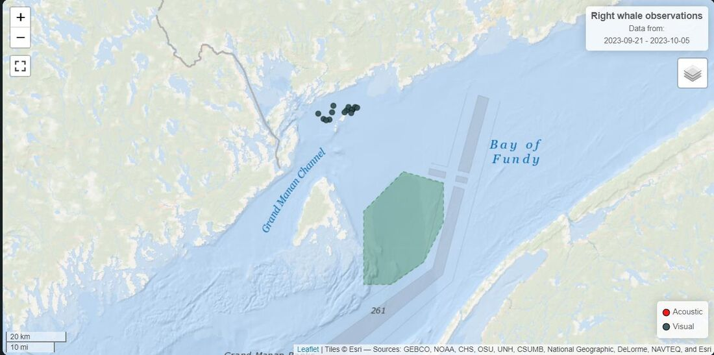
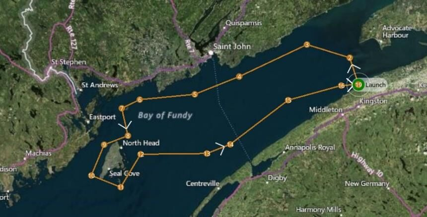
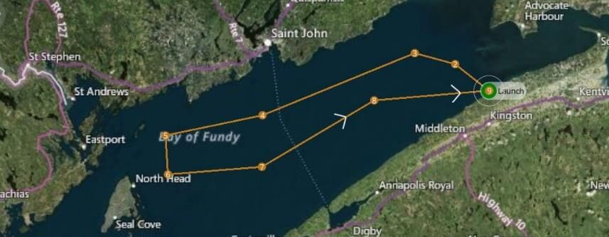
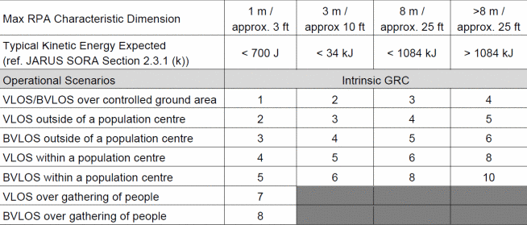
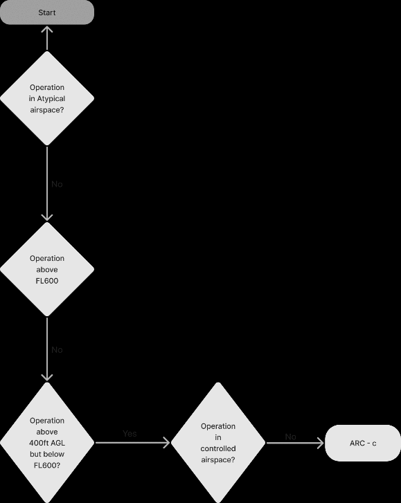
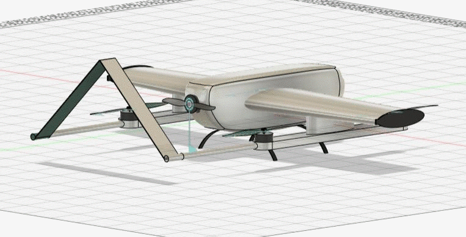

The mission
Count pods of endangered whales in the Bay of Fundy at a frequency sufficient to support conclusions about distribution and habitat use.
Finback, minke, humpback, harbour porpoise and North Atlantic right whales all use the bay through the summer. They arrive in late spring and leave around the fall, and the bay is a preferred calving location because of the available food and shelter. Counts feed into habitat use, migration pattern and population estimates.

Whales are distributed across approximately 1,000 km² between (44.98, −66.70) and (45.27, −65.04). A survey covering only part of the bay on a given day produces a count of limited value, so coverage has to be simultaneous rather than sequential.
Requirements
Aircraft requirements are derived from the concept of operations. Surveying a coastal bay autonomously in a single daily sortie fixes most of the numbers before any platform is evaluated.
| Requirement | Value | Driver |
|---|---|---|
| Endurance | 4 to 6 hours | Coverage in one sortie |
| Range | 400 to 500 km | Track length across the bay |
| Cruise speed | ~60 km/h | Image quality against coverage rate |
| Mass | Under 25 kg | Keeps the operation below the heavier permissions category |
| Altitude | 5,000 to 6,000 ft | Swath width and separation from low traffic |
| Takeoff and landing | VTOL | No runway available on the coast |
| Autonomy | Waypoint following | Long repetitive track, pilot fatigue |
| Payload | Swappable module | Sensor mix varies with conditions |
| Contingency | Defined failure mechanism | Loss of control over water |
Wind capability is a separate requirement. The bay is coastal and the aircraft is light, so the platform has to hold its track in wind speeds that would otherwise push it off its waypoints and degrade the image geometry.
Aircraft and sensors
The platform selected against these requirements is the ElevonX Tango VTOL, a fixed wing that takes off and lands on rotors. Its hybrid gas-electric configuration is what provides the six-hour endurance.
| Parameter | Value |
|---|---|
| Max takeoff weight | 19 kg |
| Wingspan / length / height | 3.0 m / 1.9 m / 0.7 m |
| Propulsion | Electric and gas |
| Payload | 5 kg, 15 W @ 5 V and 35 W @ 12 V |
| Airspeed | 20 to 35 m/s |
| Range / endurance | 420 km / 6 hours |
| Link | 868 or 900 MHz, 1 W, 57 kbps |
| Protocol | MAVLink, RC PPM transceiver |
| Takeoff and landing footprint | 10 × 10 m autonomous, 5 × 5 m with operator |
| Recovery | Parachute equipped |
Three sensors were selected. A high-resolution optical camera performs the counting and species identification, with zoom capability so the aircraft can maintain standoff from the animals, and it is the sensor a machine learning model would run against to flag pods automatically. An infrared camera extends the operating window into low light and detects whales thermally against cold water. GNSS with RTK correction geo-references each frame so a sighting is recorded as a position.
Flight paths
A single aircraft would need recharging between passes, and each pass takes hours, so the count would be assembled from different days.
Three aircraft fly simultaneously instead, each on its own waypoint route, covering between 100 and 500 km each. The routes are planned so the aircraft remain separated in both plan and altitude, and so the imaging swaths overlap sufficiently that no area between them is missed.


The third and shortest route covers the innermost sections. All three aircraft launch from the same site, which is where separation margin is smallest and where the deconfliction matters most.
| Waypoint | Latitude | Longitude | Altitude |
|---|---|---|---|
| Launch | 45.104 | −64.949 | 1.5036 km |
| 2 | 45.248 | −65.016 | 1.5658 km |
| 3 | 45.319 | −65.340 | 1.5025 km |
| 4 | 45.148 | −65.852 | 1.5017 km |
| 5 | 45.053 | −66.188 | 1.5011 km |
| 6 | 45.024 | −66.605 | 1.5006 km |
Mission planning and upload run through QGroundControl, selected because it supports VTOL platforms specifically. Takeoff, transition and landing are handled as separate phases with their own behaviour, and the altitude at each waypoint is set and monitored explicitly, which matters most during the transition into and out of wing-borne flight.
Operational volume
The operational volume is sized from an error budget rather than chosen, so the containment argument has a number behind it.
Three error sources separate the commanded track from the true position of the aircraft:
- Path definition error · the difference between the intended path and the path as defined in the plan
- Flight technical error · the accuracy with which the aircraft holds the defined path, position and altitude
- Navigational error · the difference between the reported and actual position
A total system error of 50 ft sets the tolerance the flight geography is drawn around. The contingency volume surrounds it with a horizontal buffer of 100 ft and a vertical band from 4,800 to 5,200 ft. Within the flight geography the aircraft is nominal. Within the contingency volume it is off-nominal but contained. Beyond the contingency volume, air traffic control is alerted with the last known position and heading.
Risk classification
The SORA method applies here as well. Ground risk is determined first, from the size of the aircraft and the operating environment.

The intrinsic ground risk class of 4 is reduced by the M2 mitigation, the parachute recovery system, assessed here at medium robustness. This contributes −1 and gives a final ground risk class of 3.
Air risk is determined from the decision tree. The operation is not in atypical airspace, not above FL600, above 400 ft AGL but below FL600, and not inside controlled airspace, which gives ARC-c.

The flight geography was planned into uncontrolled airspace deliberately. This is the opposite decision to the algae survey in project 04, where coverage forced the altitude up into controlled airspace and the air risk had to be argued back down using measured traffic data. Here the survey altitude could be selected freely, so it was selected to keep the airspace class low.
Digital twin and simulation
The aircraft was modelled in Fusion 360 to fly the mission in simulation. No blueprint or technical drawing is published, so the model was built from manufacturer photographs against the published overall dimensions, with component sizes estimated and iterated until the proportions matched the aircraft.


The simulation flies all three aircraft together over the bay. The main constraint was placing waypoints that maintain safe separation between the aircraft without narrowing the search swath enough to leave gaps in coverage. Configuring the cameras to sweep 180° horizontally at 30° of inclination widened the effective swath, which allowed the aircraft to be spaced further apart and flown at a lower altitude than would otherwise have been required.
Limitations
This is a mission design. No survey was flown.
The detection side is specified rather than built. The optical and infrared payloads are selected for the capability they would give a detection model, but no model was trained and no detection rate is claimed. Counting pods from 5,000 ft against sea state and glare is what determines whether the mission produces usable data, and it is not addressed here.
Deconfliction is geometric rather than active. The three aircraft are separated by waypoint placement, with no detect-and-avoid between them and no defined behaviour if one drifts off track. For three aircraft on well-separated routes this is defensible, but it would not scale to a larger fleet.
The error budget is allocated rather than measured. Fifty feet is a reasonable allowance for this class of aircraft, but the split between path definition, flight technical and navigational error would need flight data to confirm, and the contingency volume is sized directly on that assumption.
The endurance figures assume favourable conditions. A coastal bay in summer is not reliably that, and headwind on the outbound leg reduces coverage directly.